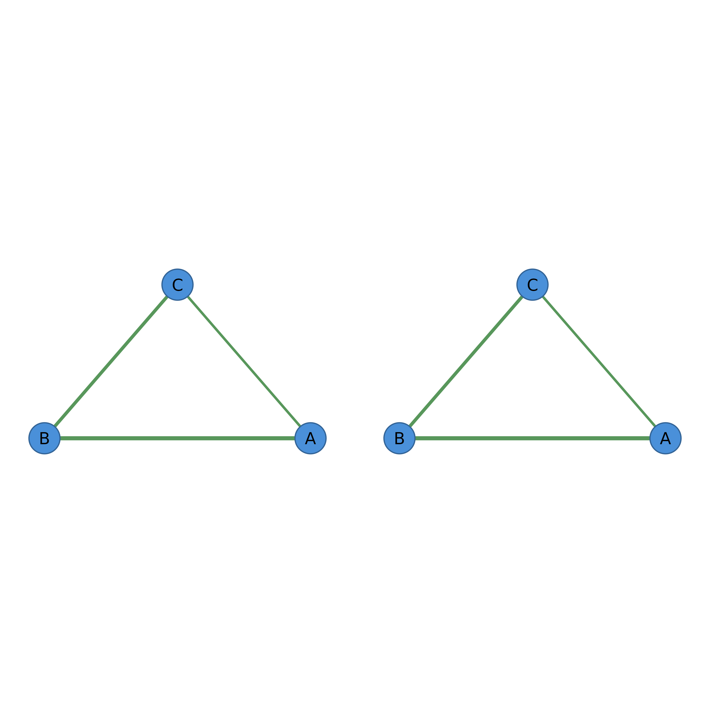

Sets up a multi-panel device layout for use with cograph plotting
functions called with combined = FALSE. Returns a par()
snapshot of the previous device state so the caller can restore it
via on.exit(graphics::par(old_par)).
Usage
panel_layout(spec, mar = c(2, 2, 3, 1), widths = NULL, heights = NULL)Arguments
- spec
Either a length-2 integer vector
c(nrow, ncol)for a uniform grid, or a numeric matrix of panel positions to pass tographics::layout().- mar
Numeric vector of length 4 giving panel margins. Default
c(2, 2, 3, 1)matches cograph's multi-panel margin convention.- widths, heights
Optional numeric vectors of column widths and row heights. Only valid when
specis a matrix; passed straight tographics::layout(). Supplying them with a uniform-gridspecis an error, sincepar(mfrow=...)has no widths/heights concept.
Value
Invisibly returns a list of previous par() settings that
can be passed back to graphics::par() to restore the prior
device state. For both spec shapes the snapshot includes
mfrow, so par(old_par) also resets any
graphics::layout() partitioning that this call introduced.
Details
Use spec = c(nrow, ncol) for a uniform grid (delegates to
graphics::par(mfrow = ...)). Use spec = <matrix> for a
non-uniform layout (delegates to graphics::layout()); the matrix
values name panel cells, so matrix(c(1, 1, 2, 3), 2, 2) produces
one wide cell on top and two cells on the bottom row.
Combined-flag scope
panel_layout() composes with the combined = FALSE opt-out
on cograph's multi-panel plot functions. Single-network calls like
splot(some_tna_object) do not honor combined — there is
nothing for it to gate. Pass combined = FALSE only to the
multi-panel hosts: plot_netobject_group(),
plot_netobject_ml(), plot_net_bootstrap_group(),
plot_group_permutation(), plot_compare(),
splot.net_mlvar(type = "all"), plot_network_evolution(),
plot.cograph_motifs(type = "network"),
plot.cograph_motif_result(type = "patterns"),
plot.cograph_motif_analysis(type = "patterns"),
plot.tna_disparity(type = "comparison"), and splot() on
group_tna / similar list-of-plottables inputs.
Examples
mat <- matrix(c(0, .5, .3, .5, 0, .4, .3, .4, 0), 3, 3)
colnames(mat) <- rownames(mat) <- c("A", "B", "C")
net1 <- as_cograph(mat)
net2 <- as_cograph(mat * 0.5)
# Uniform 1 x 2 grid
op <- panel_layout(c(1, 2))
splot(net1, combined = FALSE)
splot(net2, combined = FALSE)

graphics::par(op)